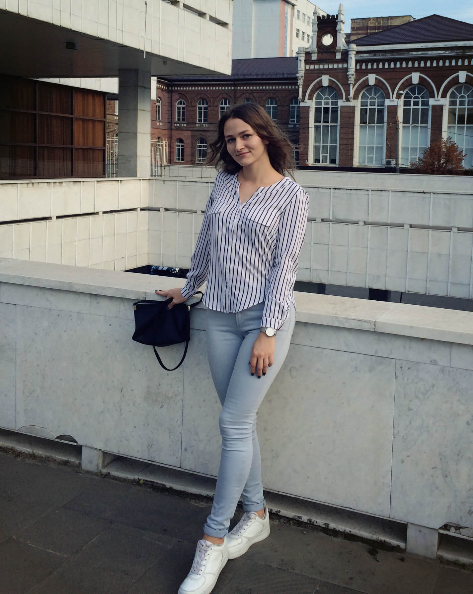
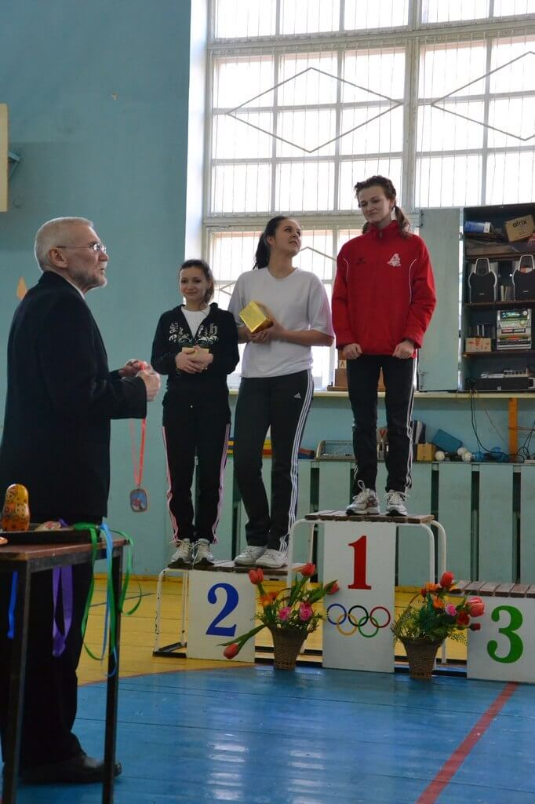
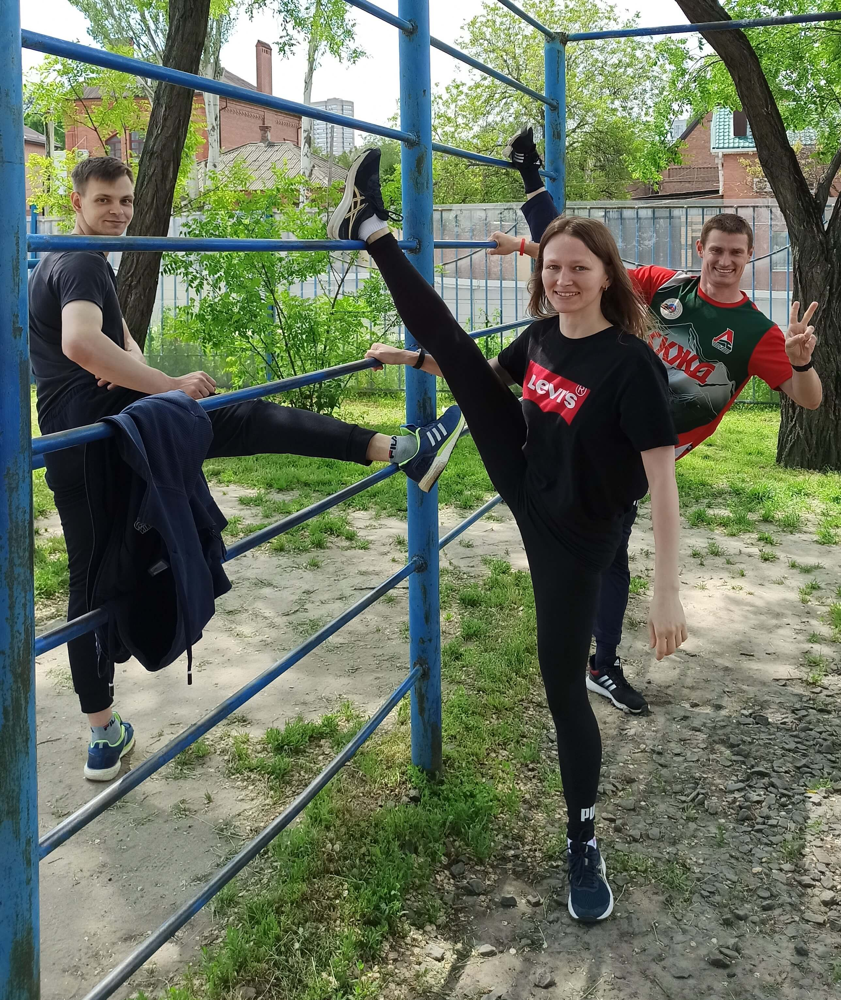
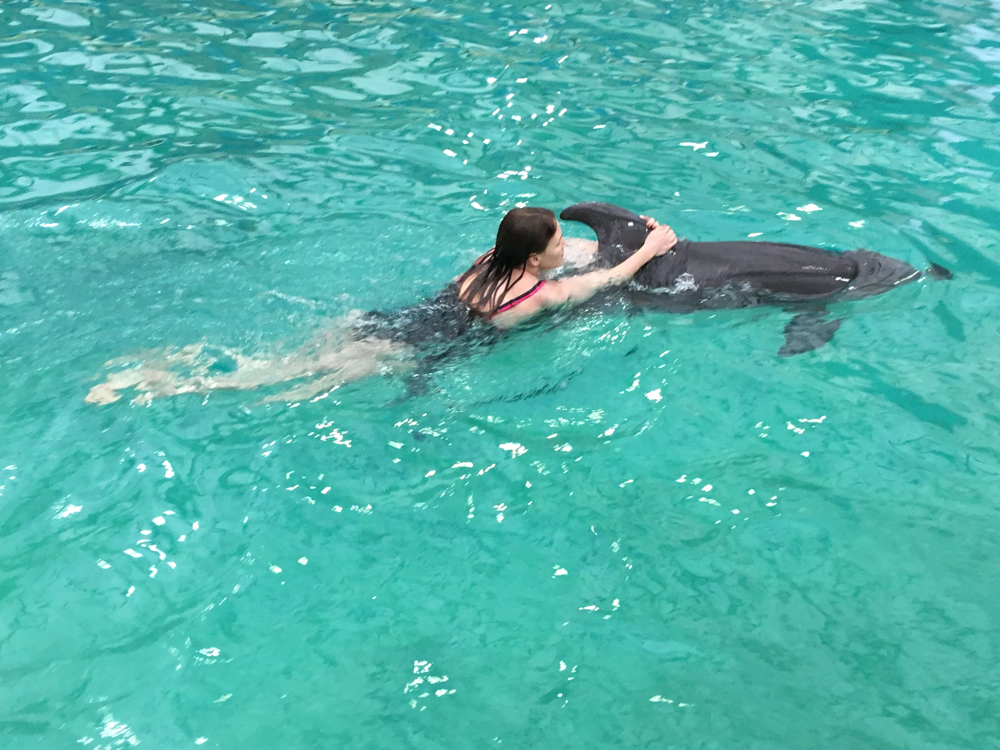
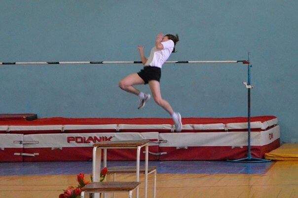
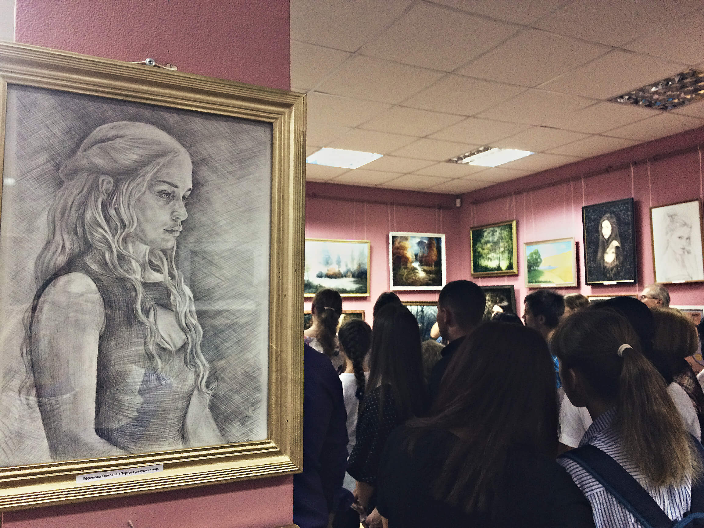
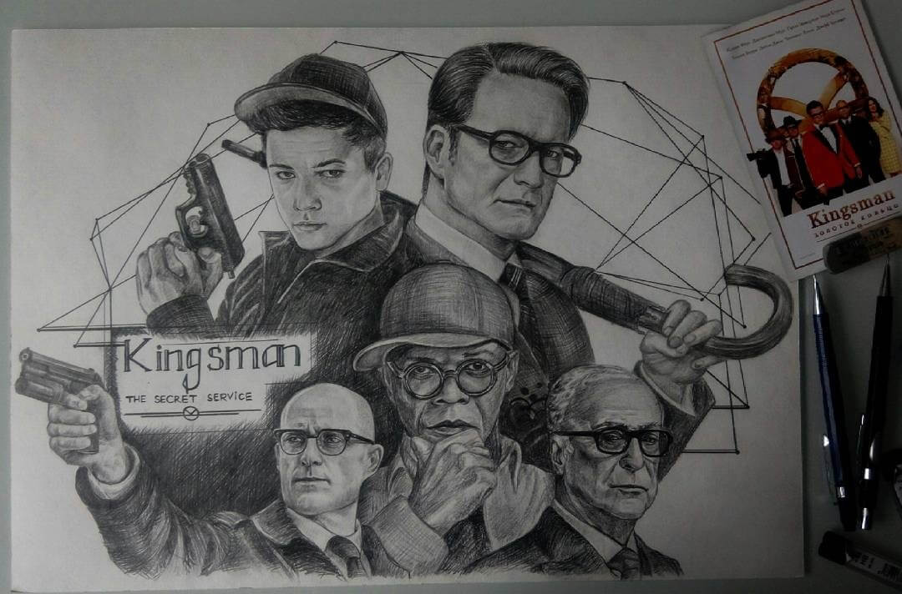
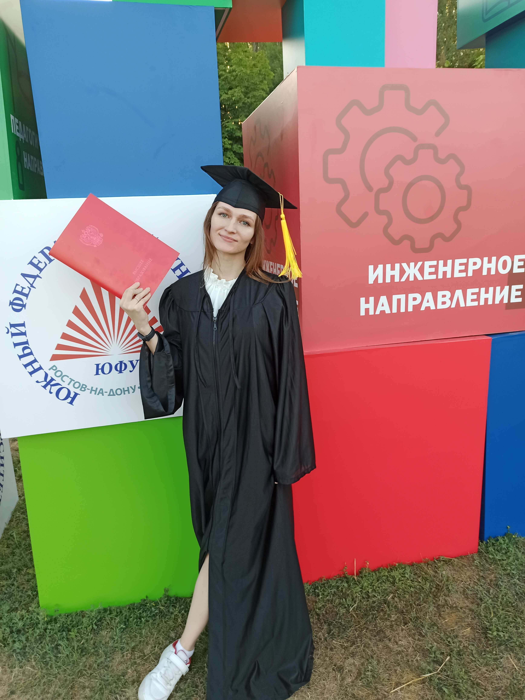

Привет, Я - Света.
Родилась в г.Сальске. С самого детства люблю заниматься спортом, чему приучил меня мой любимый старший брат Саша. Каждый день у нас с ним проходил на стадионе, в спортзале или просто активно. Из-за этого обожаю активный отдых, и пробовать что-то новое. Мои любимые виды спорта – лёгкая атлетика и гимнастика.
   Также 7 лет отучилась в художественной школе. Люблю рисовать так, сказать, когда нахлынет вдохновение. Было время, когда даже продавала свои картины.
 Имею два высших образования бакалавриат и магистратура по специальности Радиофизика. Работаю Инженером-радиофизиком. Разрабатываю различную радиоэлектронную аппаратуру и СВЧ-устройства.
